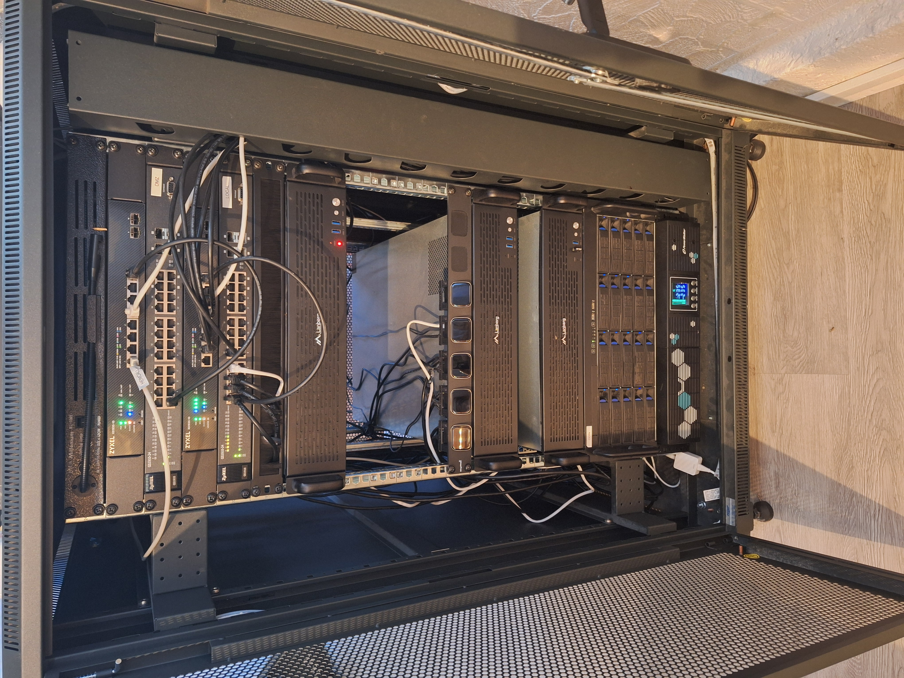

Refreshing my homelab
Recently, I have bene doing some upgrades and refresh to my homelab rack. Some of these updates are just getting started, but several of these are completed already.
Snce we moved to the new house, we have 10G internet. So, I upgraded the networking on the rack to be 10G network. This means, two 10G switches and two 10G NIC (Intel) on the firewall server. I also installed one 10G NIC on my desktop computer to get 10G internet. I plan to upgrade the other two servers to 10G ethernet in the next few months. Obviously, I do not really need 10G internet on my computer, but it was fun to achieve that.
I have also installed a new UPS in the rack. I went with Powerwalker this time because it much more affordable than APC. The reviews on that UPS looked good, so I am trying it. So far, it has been really good. It can keep my homelab running for about 45 minutes. This was necessary multiple times during the installation of our solar panels.
After many years of service, the hardware in some of the servers needed upgrading. I had some issues on the hardware of the firewall and the main server did not have enough RAM to handle all the services. I was running Openproject and InfluxDB (among others) on the same machine and this did not work well with 4Go of RAM. So, I refreshed the entire hardware and also changed the case. The cases from Norco and Ri-vier were quite nice but also very short so not great for airflow and for extensibility. I switched to Lanberg cases for the servers that were upgraded.
Talking about servers, I also added a new server for Home Assistant. I got rid of Samsung Smarthings and Hue and replaced everything with Home Assistant. I can now control many things in the house and I have many more plans. I am really impressed by this software, it's nothing short of amazing.
I also changed my KVM switch. I had an hardware KVM switch with a hardware monitor console. But the keyboard was falling into pieces and the connectivity was ancient (VGA). So I switched to multiple JetKVM. I am very happy about them. They are much easier to setup than piKVM and and they are cheaper. I also ordered a 3D printed rack mount on ebay.
The next thing I want to refresh is the NAS. The hardware is also in need of a refresh because it still has really old hardware (10+ years old at this point). However, I also want to switch the RAID to ZFS (mostly to learn) instead of LVM + mdadm. But this means either getting rid of a lot of data or replacing all disks. And disks are currently insanely expensive.
As for software, all servers are still running Gentoo. I am still quite happy about it, even though I would sometimes prefer faster upgrades.
Here is a picture of the rack in its current state:

What about you? Do you have a homelab?
Comments
Comments powered by Disqus